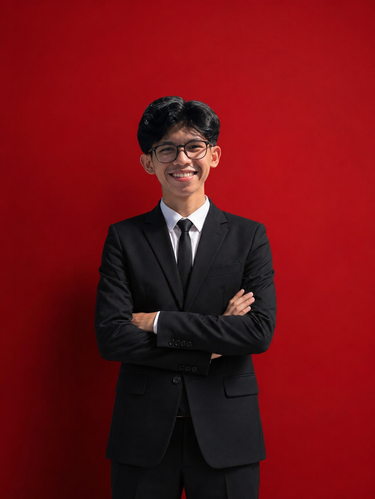

Muhammad
Yusra.
Mahasiswa Institut Teknologi dan Bisnis Indonesia yang berfokus pada
pengembangan aplikasi, analisis data, dan solusi digital berbasis teknologi.

Saya Muhammad Yusra, mahasiswa aktif di Institut Teknologi dan Bisnis Indonesia. Saya tertarik mengembangkan kemampuan di bidang teknologi sekaligus memahami sisi bisnis dari setiap solusi yang dibangun.
Portofolio ini merangkum keterampilan, perjalanan akademik, dan proyek yang sedang saya kerjakan sebagai bagian dari proses belajar menuju karier di industri teknologi dan bisnis.
Terbuka untuk kolaborasi, magang, maupun diskusi seputar proyek dan ide baru.
Website Portofolio Pribadi
Membangun website portofolio responsif menggunakan HTML dan CSS untuk menampilkan profil, keterampilan, pengalaman akademik, serta dokumentasi proyek.
Web Scraping Python
Mengembangkan sistem web scraping menggunakan Python untuk mengambil data dari berbagai website, melakukan proses cleaning, dan menyimpan hasil dalam format dataset.
Dashboard Analisis Penjualan Power BI
Membuat dashboard Business Intelligence untuk mengolah data transaksi penjualan menjadi visualisasi informasi yang membantu proses analisis dan pengambilan keputusan.